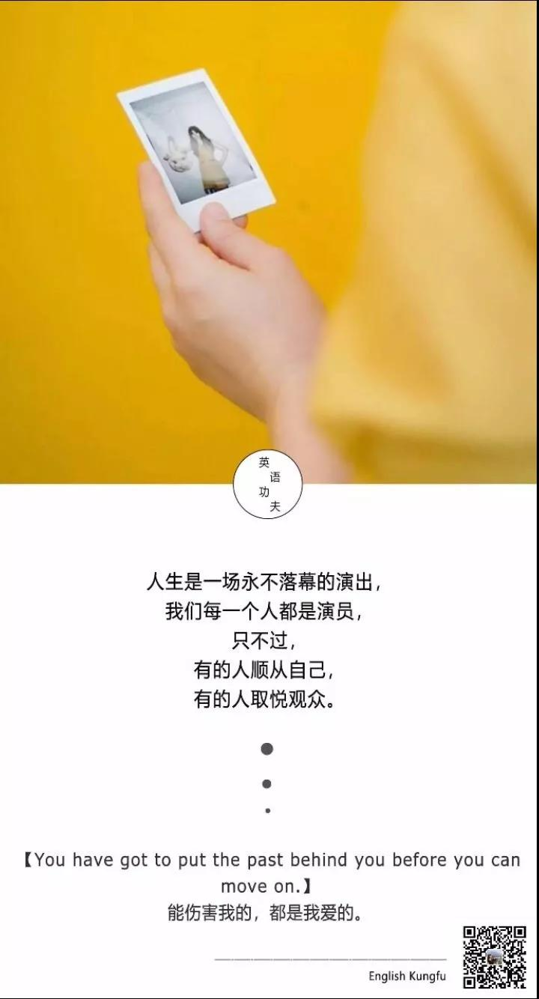
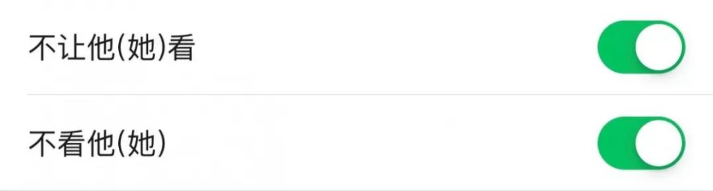
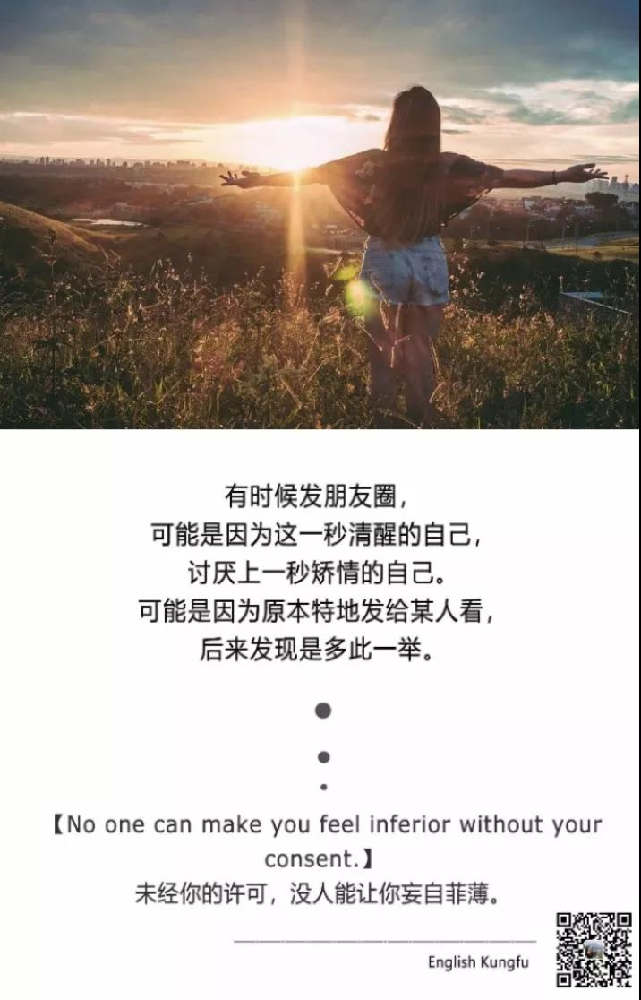
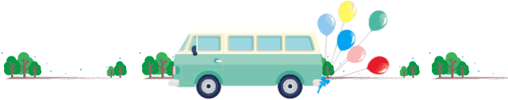
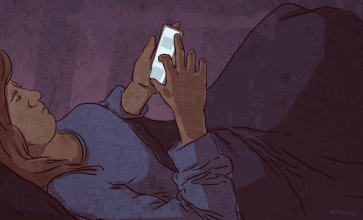
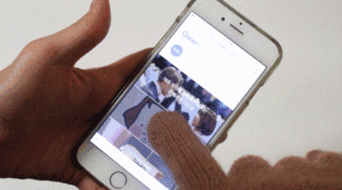
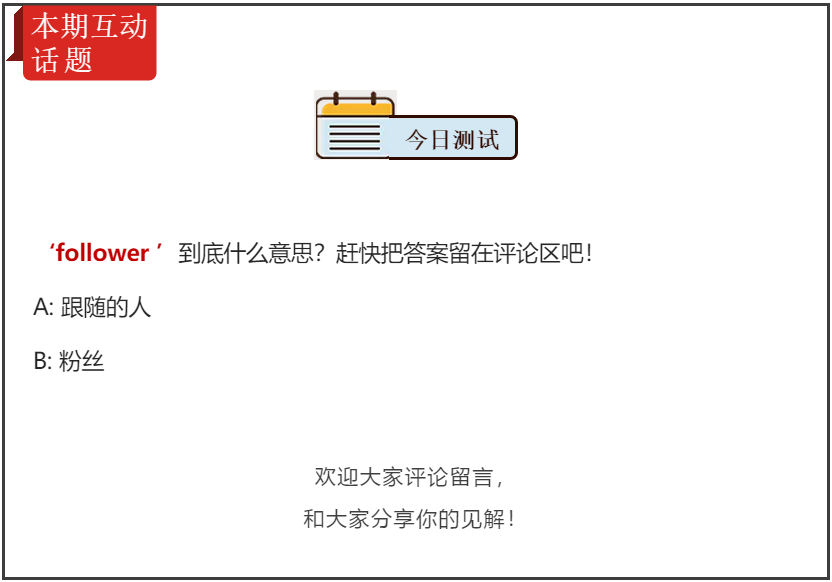

微信最新潜规则：你发的朋友圈，别人根本看不到
JOJO老师 英语功夫2019-7-13

朋友圈有个姑娘分享了一首歌，共同好友中，有个总是自称心直口快的同学，在下面评论，“这歌也太难听了，什么品位啊！”
这个姑娘是我关系还不错的朋友，于是我看不惯，回他了一句：嘴巴温柔一些，耳朵才能听到美好的声音哦！
姑娘当时就给我发私信，说一直都很烦这个同学讲话的方式，刚才那句话实在太解气了！
其实像这种人，直接点开他的头像，在朋友圈和视频动态那里选择：

或许他自己都不知道，当他发了朋友圈期待别人点赞时，他发的朋友圈，别人可能都看不到！

在生活中，我们避免不了与各种各样的人打交道，希望在谈及别人的生活时，我们至少要做到：
不了解，但不随意批判；
不认同，但不轻易否定；
不喜欢，但不带偏见！
最后，好好说话！

非常扎心的事实，但是情商高会说话的人，确实更受欢迎！那今天我们来学习与微信息息相关的几种实用英语表达！
01 “加好友”英语怎么说？
“加好友” friend v.动词
例句：
She was so surprised when her ex-boyfriend friended her.
她很惊讶她的前男友加她为好友。
02 “发朋友圈”英语怎么说？
发朋友圈
post something on moments

例句：
He often posts his pictures on moments.
他经常在朋友圈发照片。
03 “关注”英语怎么说？
关注 follow
例句：
She seldom follows others.
她很少关注别人。
04 “刷屏”英语怎么说？
刷屏 Status updates

例句：
Her status updates are all over my newsfeed.
我看到她一直在朋友圈刷屏。
05 “拉黑”英语怎么说？
拉黑 Block somebody
例句：
I had no choice but to block her.
没辙，我只能拉黑她。
例句：
He posts selfie on moments everyday.
他每天都在朋友圈发自拍。
